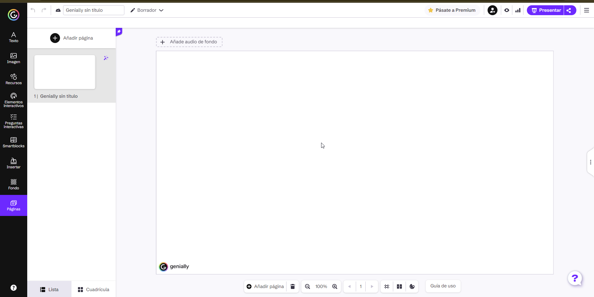
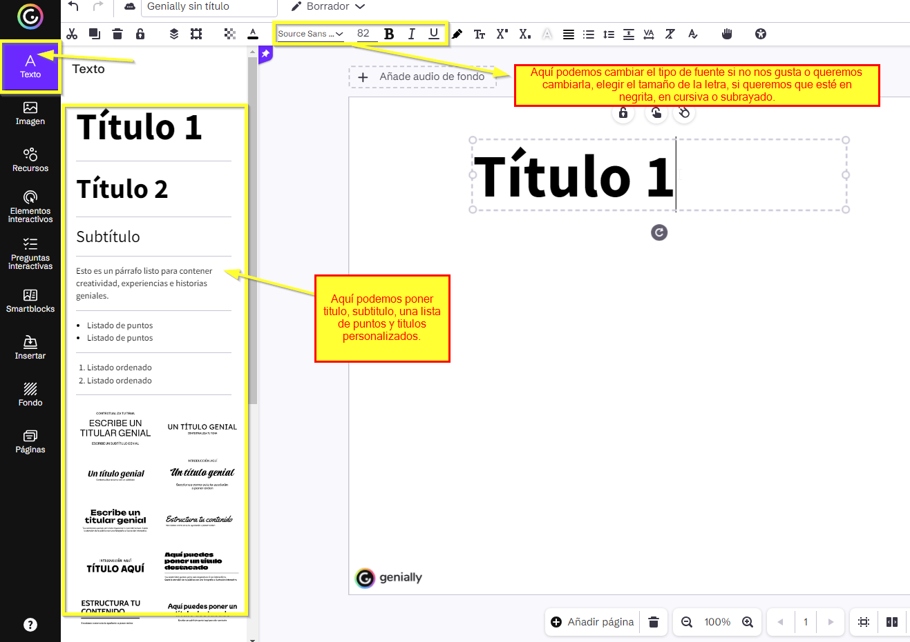
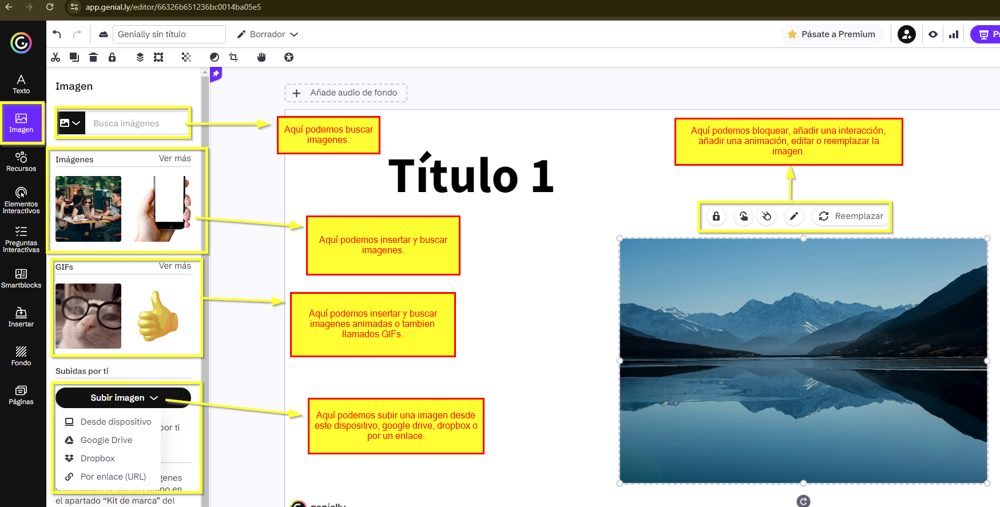
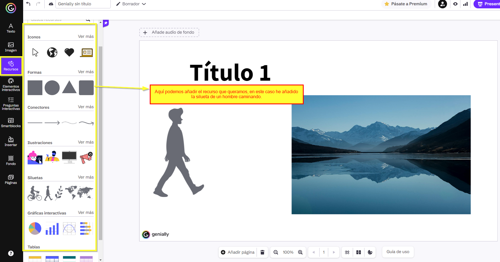
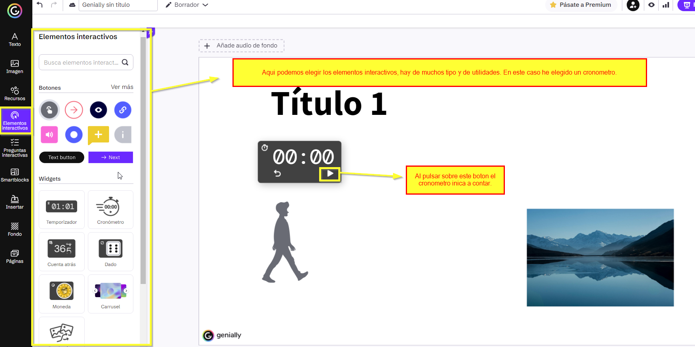
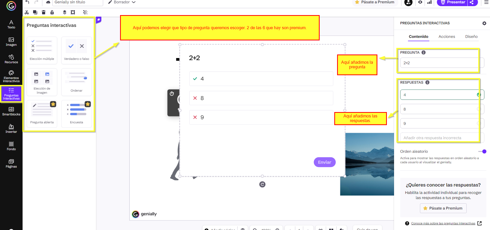
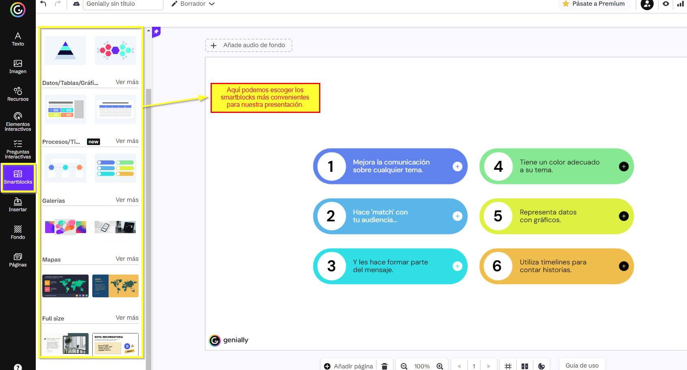
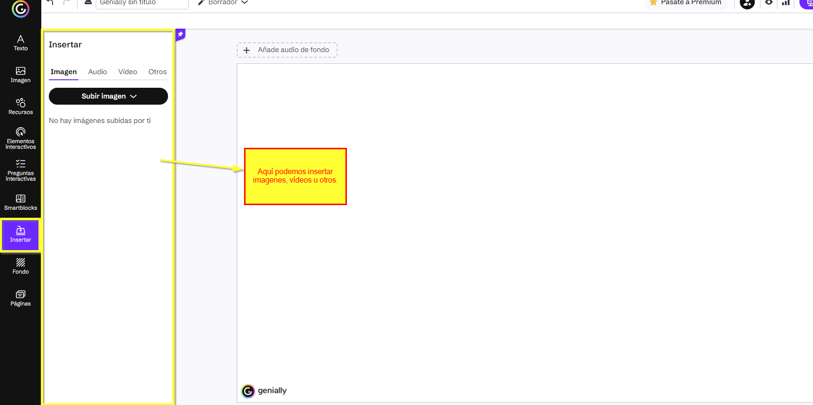
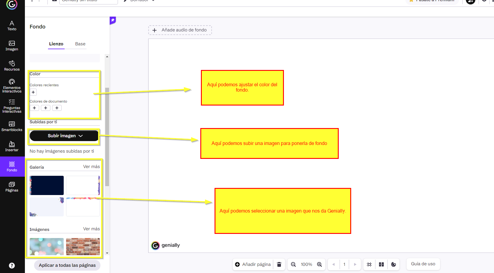
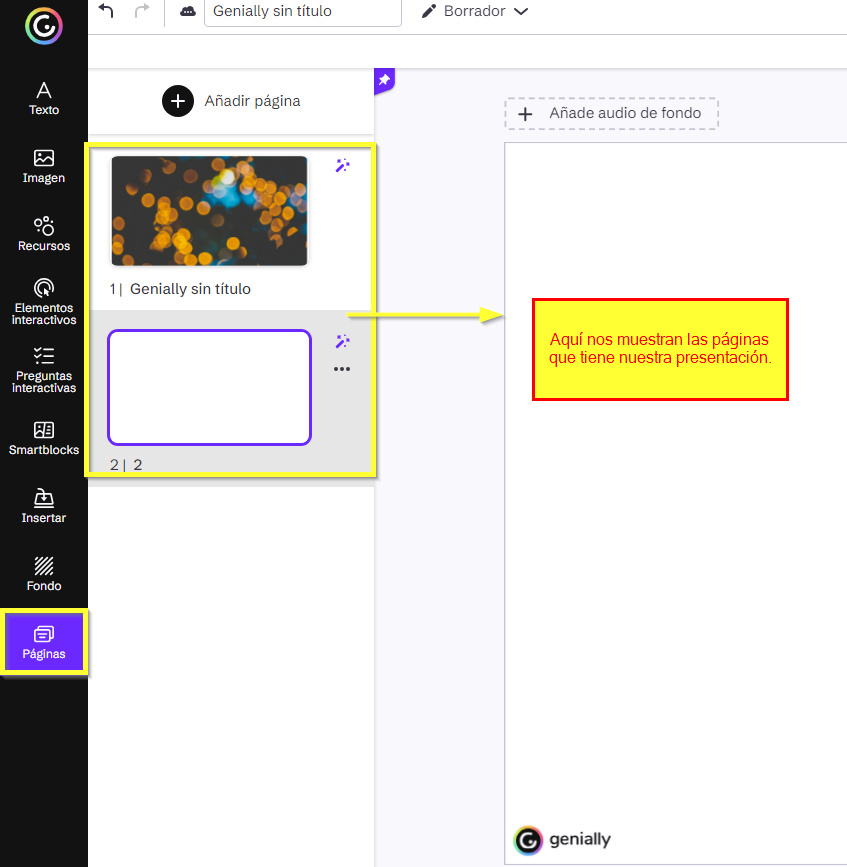

Trabajo Genially Iván Sanz Sanz
6. Interfaz del menú de diseño
Menú de diseño
- Esta es la interfaz del menú de diseño, a continuación explicaremos para que sirve cada apartado.

1. Texto
- Esta herramienta nos permite insertar texto en nuestra presentación, esta herramienta será la que más vayamos a utilizar seguramente.

2. Imagen
- Esta herramienta nos sirve para insertar imágenes en nuestra presentación.

3. Recursos
- Esta herramienta nos sirve para añadir iconos, flechitas, siluetas, ilustraciones, graficas... Pequeñas imágenes que nos servirán para decorar nuestra presentación.

4. Elementos interactivos
- Esta herramienta nos permite añadir elementos que al pulsar sobre ellos hacen una función.
5. Preguntas interactivas
- Esta herramienta nos sirve para añadir preguntas interactivas a nuestra presentación.

6. Smartblocks
- Un smartblock son diseños en los que se añade texto que nos sirven para complementar nuestras presentaciones y hacerlas ver mucho más profesionales.

7. Insertar
- En esta herramienta podemos insertar imágenes, audio, vídeos y otros.

8. Fondo
- Esta herramienta nos sirve para añadir un fondo a nuestra presentación.

9. Páginas
- Esta herramienta nos sirve para ver las páginas de nuestra presetación.

Videotutorial
- A continuación un videotutorial sobre la interfaz del menú de diseño:
Obra publicada con Licencia Creative Commons Reconocimiento Compartir igual 4.0